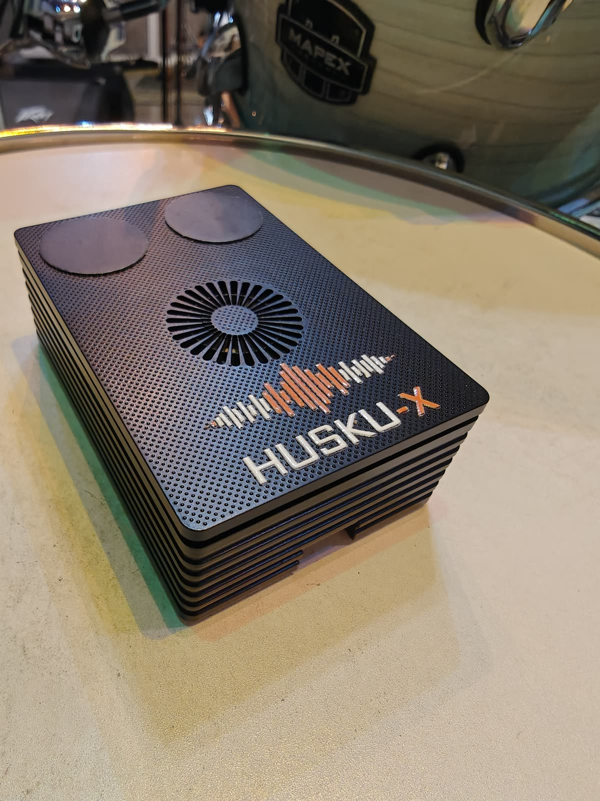
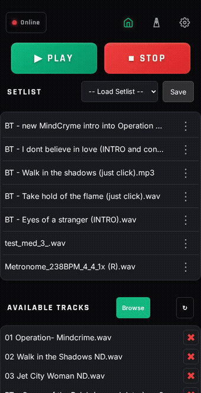
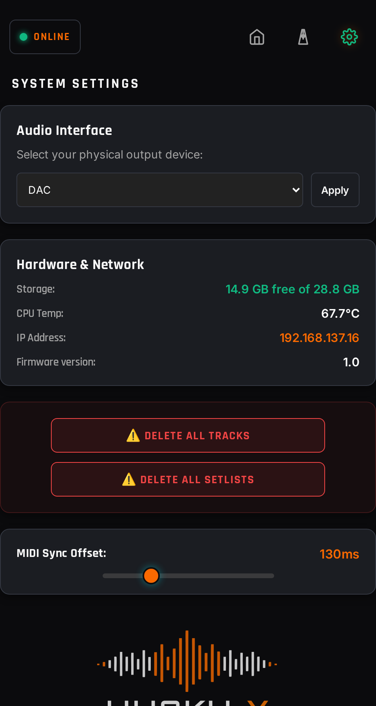

HUSKU-X is a portable, fully offline backingtrack and click-track player built for gigging musicians. It can be controlled from any phone, tablet, or laptop — no cloud, no internet connection required on stage.

Add the tracks directly from your connected device. Supports multiple setlists.
Tap tempo or dial in an exact BPM, pick a meter and subdivision, and create a ready-to-play click track straight into your library.
Option to play a matching MIDI file alongside your backingtrack for lighting or automation cues, with an adjustable sync offset to keep everything tight.
Plug in a USB stick with your backing tracks (MP3 or WAV) and it will automatically import to the library.
Runs locally on the Husku-X device with no internet connection and you don't even have to have flight mode enabled since your phone, tablet, computer is acting as the remote.
Use any device to connect to the HUSKU-X and control it wirelessly.
Your current setlist, transport controls and library, all on one screen. Reorder tracks, browse and add new tracks, and tap a track to play it instantly.

Set a tempo by tapping along or using the BPM stepper, choose your meter and
subdivision, and generate a five-minute click track that's automatically routed
for whatever audio interface is currently plugged in
(Use Channel 2 (Right) on a 2-channel interface, or Channel 3 on a 4+ channel interface)
Switch audio interfaces, and keep an eye on storage, CPU temperature, midi sync offset etc.

Most audio interfaces are plug-and-play supported. Let us know if you run into any issues.
Get in touch to find out more.